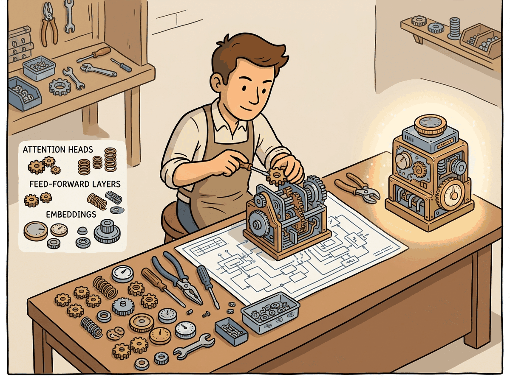
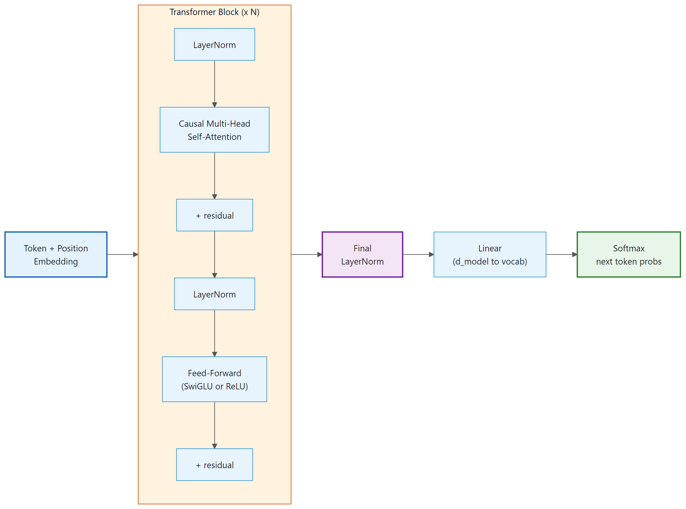

I built a Transformer from scratch and it predicted "the the the the." Honestly, some meetings feel the same way.
Norm, Repetitively Decoded AI Agent
Prerequisites
This coding lab requires a solid understanding of the Transformer architecture from Section 3.1 and layer normalization from Section 3.3. You will write PyTorch code, so the PyTorch tutorial in Section 0.3 (tensors, autograd, training loops) is essential preparation.
Reading about attention heads and layer normalization is one thing; implementing them is another. This hands-on lab translates the architecture from Section 3.1 into working PyTorch code, building a character-level language model step by step. By the end, you will have internalized how data flows through embeddings, multi-head attention, and feed-forward layers. This concrete understanding pays dividends when you fine-tune models in Chapter 18 or debug inference issues in production.
This section is a coding lab. By the end you will have a working character-level language model built on a decoder-only Transformer. Every line of code is explained. We encourage you to type the code yourself rather than copy-pasting; the act of typing builds muscle memory for these patterns.

4.2.1 What We Are Building
The QKV mechanism is a differentiable key-value store. Queries retrieve values by weighted similarity across all keys, exactly like a fuzzy database lookup. Unlike SQL, attention has no "null result": when no key closely matches the query, it still returns a weighted average of all values, weighted by imperfect similarity. This is the root cause of attention-based confabulation: the model retrieves a plausible but incorrect "nearest match" rather than reporting uncertainty. The KV cache (Chapter 10) is, from this perspective, simply a precomputed cache of database rows, subject to the same latency-versus-memory tradeoffs as any database cache.
We will implement a decoder-only Transformer (the GPT architecture) that performs character-level language modeling. Given a sequence of characters, the model predicts the next character at every position. We choose character-level modeling because it eliminates the need for a tokenizer (Chapter 02), letting us focus entirely on the architecture.
Our model will have these hyperparameters:
| Hyperparameter | Value | Notes |
|---|---|---|
| d_model | 128 | Embedding and residual stream dimension |
| n_heads | 4 | Number of attention heads (d_k = 32) |
| n_layers | 4 | Number of Transformer blocks |
| d_ff | 512 | Feed-forward inner dimension (4 × d_model) |
| block_size | 128 | Maximum context length |
| vocab_size | ~65 | Unique characters in the dataset |
| dropout | 0.1 | Dropout rate |
This is a small model (~1.6M parameters) that trains in a few minutes on a single GPU (or even on CPU for a few epochs). The architecture is identical to GPT; only the scale differs.
Typing each line yourself forces you to read and understand every operation. You will notice patterns (the repeated LayerNorm, the residual connections, the projection matrices) that become invisible when you copy-paste. These patterns are the same ones you will encounter in every production Transformer codebase, from Hugging Face to vLLM.

4.2.2 The Complete Implementation
Below is the full model in a single file. We break it into logical pieces and explain each one. The complete code (all pieces assembled) is approximately 300 lines including comments.
4.2.2.1 Imports and Configuration
We begin by importing PyTorch and defining a configuration dataclass that holds all model hyperparameters.
"""
mini_transformer.py
A minimal decoder-only Transformer for character-level language modeling.
~300 lines of annotated PyTorch.
"""
import math
import torch
import torch.nn as nn
import torch.nn.functional as F
from dataclasses import dataclass
@dataclass
class TransformerConfig:
"""All hyperparameters in one place."""
vocab_size: int = 65 # number of unique characters
block_size: int = 128 # maximum context length
n_layers: int = 4 # number of Transformer blocks
n_heads: int = 4 # number of attention heads
d_model: int = 128 # embedding / residual stream dimension
d_ff: int = 512 # feed-forward inner dimension
dropout: float = 0.1 # dropout probability
bias: bool = False # use bias in Linear layers?
We use a dataclass so that every hyperparameter is explicit, documented, and easy to
modify. Setting bias=False follows the LLaMA convention and marginally reduces
parameter count.
4.2.2.2 Causal Self-Attention
This module implements multi-head causal self-attention with a triangular mask that prevents positions from attending to future tokens.
import torch.nn.functional as F
from torch import nn
import torch
# Causal self-attention with a triangular mask: each token can only
# attend to itself and earlier positions, enforcing left-to-right generation.
class CausalSelfAttention(nn.Module):
"""Multi-head causal (masked) self-attention."""
def __init__(self, config: TransformerConfig):
super().__init__()
assert config.d_model % config.n_heads == 0
# Key, Query, Value projections combined into one matrix
self.qkv_proj = nn.Linear(config.d_model, 3 * config.d_model, bias=config.bias)
# Output projection
self.out_proj = nn.Linear(config.d_model, config.d_model, bias=config.bias)
self.attn_dropout = nn.Dropout(config.dropout)
self.resid_dropout = nn.Dropout(config.dropout)
self.n_heads = config.n_heads
self.d_model = config.d_model
self.d_k = config.d_model // config.n_heads
# Causal mask: lower-triangular boolean matrix
# Register as buffer so it moves to GPU with the model
mask = torch.tril(torch.ones(config.block_size, config.block_size))
self.register_buffer("mask", mask.view(1, 1, config.block_size, config.block_size))
def forward(self, x):
B, T, C = x.shape # batch, sequence length, d_model
# Compute Q, K, V in one matrix multiply, then split
qkv = self.qkv_proj(x)
q, k, v = qkv.split(self.d_model, dim=2)
# Reshape for multi-head: (B, T, C) -> (B, n_heads, T, d_k)
q = q.view(B, T, self.n_heads, self.d_k).transpose(1, 2)
k = k.view(B, T, self.n_heads, self.d_k).transpose(1, 2)
v = v.view(B, T, self.n_heads, self.d_k).transpose(1, 2)
# Scaled dot-product attention
# (B, n_heads, T, d_k) @ (B, n_heads, d_k, T) -> (B, n_heads, T, T)
scores = (q @ k.transpose(-2, -1)) * (self.d_k ** -0.5)
# Apply causal mask: positions beyond current token get -inf
scores = scores.masked_fill(self.mask[:, :, :T, :T] == 0, float('-inf'))
attn_weights = F.softmax(scores, dim=-1)
attn_weights = self.attn_dropout(attn_weights)
# Weighted sum of values
# (B, n_heads, T, T) @ (B, n_heads, T, d_k) -> (B, n_heads, T, d_k)
out = attn_weights @ v
# Concatenate heads: (B, n_heads, T, d_k) -> (B, T, C)
out = out.transpose(1, 2).contiguous().view(B, T, C)
# Final linear projection + dropout
return self.resid_dropout(self.out_proj(out))
Notice the line scores = (q @ k.transpose(-2, -1)) * (self.d_k ** -0.5). That
** -0.5 term (equivalent to dividing by √dk) is not cosmetic; it
prevents softmax from collapsing into a near-one-hot distribution.
Here is why. If the entries of Q and K are drawn roughly from a standard normal distribution (mean 0, variance 1), then each element of the dot product Q·K is the sum of dk products of independent unit-normal variables. By the properties of variance, the dot product has variance dk. For our config with dk = 32, this means raw scores have a standard deviation around 5 to 6. For a larger model with dk = 128, the standard deviation grows to about 11.
Feed values that large into softmax and the result becomes near-one-hot: almost all the attention weight concentrates on a single position, and the gradients of all other positions effectively vanish. The model stops learning. Dividing by √dk rescales the scores back to unit variance, keeping the softmax in a numerically healthy region where it produces diffuse distributions and carries gradients to all attended positions.
Concrete example: with dk = 128 and no scaling, a single score might be 14 while others cluster around 0. softmax(14, 0, 0, …) ≈ (0.9999, 0.00003, …). After dividing by √128 ≈ 11.3, the same score becomes ~1.2, and softmax produces a much more spread-out distribution where all positions can receive meaningful gradient signal. Section 3.3 explores how RoPE and other positional encodings interact with this scaling.
Our config uses n_heads=4, splitting dmodel=128 into four 32-dimensional
subspaces. Why not just do one big attention over all 128 dimensions?
Each head learns to attend to a different kind of relationship simultaneously. In a trained language model, different heads specialize in distinct patterns. Some heads focus on syntactic relationships: the subject attending to its verb, or a pronoun attending to its antecedent. Other heads capture positional patterns: attending to the immediately preceding token or to the first token in the sequence (a common "global anchor" behavior). Still others detect semantic similarity: tokens that occur in similar contexts across the corpus attracting one another.
If you used a single attention head over the full dmodel-dimensional space, the
attention weight at each position is a single scalar. Multiple heads produce
n_heads independent attention distributions over the sequence; the concatenation
of their weighted value outputs gives the model the ability to simultaneously retrieve
information along all these different relational axes. The output projection WO
then integrates these parallel "views" into a single updated representation.
Clark et al. (2019) visualized BERT's attention heads and found that individual heads develop
highly interpretable functions: one head predominantly attends to the
[SEP] separator token (global context anchor), another tracks direct objects of
verbs, and another follows coreference chains. These specializations emerge from training
alone; they are not explicitly programmed. See
Section 3.3 for more on attention head behavior.
We compute Q, K, and V with a single linear layer (qkv_proj) of size
d_model → 3 * d_model and then split the output into three equal parts.
This is mathematically identical to three separate linear layers but is more efficient because
it performs one large matrix multiply instead of three smaller ones. The GPU utilizes its
parallelism more effectively with larger matrices.
4.2.2.3 Feed-Forward Network
The position-wise feed-forward network applies two linear transformations with a nonlinearity in between.
import torch.nn.functional as F
from torch import nn
# Position-wise FFN: expand to 4*d_model with ReLU, then project back.
# Applied independently at every token position in the sequence.
class FeedForward(nn.Module):
"""Position-wise feed-forward network with ReLU activation."""
def __init__(self, config: TransformerConfig):
super().__init__()
self.fc1 = nn.Linear(config.d_model, config.d_ff, bias=config.bias)
self.fc2 = nn.Linear(config.d_ff, config.d_model, bias=config.bias)
self.dropout = nn.Dropout(config.dropout)
# Forward pass: define computation graph
def forward(self, x):
x = F.relu(self.fc1(x))
x = self.dropout(x)
x = self.fc2(x)
x = self.dropout(x)
return x
This is the simplest version. For a more advanced variant, you can swap in SwiGLU.
import torch.nn.functional as F
from torch import nn
# SwiGLU FFN variant (LLaMA, PaLM): replace ReLU with a gated SiLU
# activation, using 2/3 of the hidden dimension for the gate projection.
class SwiGLUFeedForward(nn.Module):
"""SwiGLU feed-forward (used in LLaMA, PaLM)."""
def __init__(self, config: TransformerConfig):
super().__init__()
# SwiGLU uses 3 weight matrices instead of 2
# To keep param count comparable, the hidden dim is often 2/3 of d_ff
hidden = int(2 * config.d_ff / 3)
self.w1 = nn.Linear(config.d_model, hidden, bias=config.bias)
self.w2 = nn.Linear(hidden, config.d_model, bias=config.bias)
self.w3 = nn.Linear(config.d_model, hidden, bias=config.bias) # gate
self.dropout = nn.Dropout(config.dropout)
def forward(self, x):
# SiLU(x * W1) * (x * W3) then project back
return self.dropout(self.w2(F.silu(self.w1(x)) * self.w3(x)))
4.2.2.4 Transformer Block
Each block combines causal self-attention and a feed-forward network with residual connections and layer normalization.
from torch import nn
# Single transformer block: Pre-LN ordering with residual connections.
# Input flows through norm, attention, add residual, norm, FFN, add residual.
class TransformerBlock(nn.Module):
"""A single Transformer block with Pre-LN ordering."""
def __init__(self, config: TransformerConfig):
super().__init__()
self.ln1 = nn.LayerNorm(config.d_model)
self.attn = CausalSelfAttention(config)
self.ln2 = nn.LayerNorm(config.d_model)
self.ffn = FeedForward(config)
# Forward pass: define computation graph
def forward(self, x):
# Pre-LN: normalize before each sub-layer
x = x + self.attn(self.ln1(x)) # residual + attention
x = x + self.ffn(self.ln2(x)) # residual + FFN
return x
This is remarkably simple. Two lines of actual computation, each following the pattern:
x = x + SubLayer(LayerNorm(x)). The softmax is the x + at the
beginning; the Pre-LN ordering means we normalize the input to each sub-layer, not the output.
The original "Attention Is All You Need" paper (Vaswani et al., 2017) placed LayerNorm
after the residual add: LayerNorm(x + SubLayer(x)). This is called
Post-LN. Our implementation uses Pre-LN: x + SubLayer(LayerNorm(x)).
That subtle reordering has a large practical effect.
With Post-LN, the gradients flowing back through the network must pass through the LayerNorm before reaching earlier layers. This creates large gradient variance that makes training unstable at large scale, requiring careful learning-rate warmup schedules. Pre-LN sends the raw residual gradient directly back to all earlier layers without passing through the norm, resulting in much more stable gradient flow. Virtually every modern LLM (GPT-2 onward, LLaMA, Mistral, Gemma) uses Pre-LN as a result.
There is also a simplified variant called RMSNorm (Zhang & Sennrich, 2019) that removes the mean-centering step of standard LayerNorm, keeping only the root-mean-square scaling. This reduces computation slightly with no measurable quality loss and is used in LLaMA, Mistral, and Qwen. For a full comparison of Post-LN, Pre-LN, and RMSNorm, including an architecture diagram, see Section 3.3: Pre-Norm vs. Post-Norm.
4.2.2.5 The Complete Model
The full model stacks an embedding layer, multiple Transformer blocks, and a final linear head for next-token prediction.
import torch.nn.functional as F
import math
from torch import nn
import torch
# Full decoder-only transformer: stack N blocks, add token + position
# embeddings, project to vocabulary logits, and implement autoregressive generate().
class MiniTransformer(nn.Module):
"""Decoder-only Transformer for character-level language modeling."""
def __init__(self, config: TransformerConfig):
super().__init__()
self.config = config
# Token and position embeddings
self.token_emb = nn.Embedding(config.vocab_size, config.d_model)
self.pos_emb = nn.Embedding(config.block_size, config.d_model)
self.drop = nn.Dropout(config.dropout)
# Stack of Transformer blocks
self.blocks = nn.ModuleList([
TransformerBlock(config) for _ in range(config.n_layers)
])
# Final layer norm (needed with Pre-LN)
self.ln_final = nn.LayerNorm(config.d_model)
# Output head: project from d_model to vocab_size
self.lm_head = nn.Linear(config.d_model, config.vocab_size, bias=False)
# Weight tying: share embedding and output weights
self.token_emb.weight = self.lm_head.weight
# Initialize weights
self.apply(self._init_weights)
# Scale residual projections
for block in self.blocks:
nn.init.normal_(
block.attn.out_proj.weight,
mean=0.0,
std=0.02 / math.sqrt(2 * config.n_layers)
)
nn.init.normal_(
block.ffn.fc2.weight,
mean=0.0,
std=0.02 / math.sqrt(2 * config.n_layers)
)
def _init_weights(self, module):
if isinstance(module, nn.Linear):
nn.init.normal_(module.weight, mean=0.0, std=0.02)
if module.bias is not None:
nn.init.zeros_(module.bias)
elif isinstance(module, nn.Embedding):
nn.init.normal_(module.weight, mean=0.0, std=0.02)
elif isinstance(module, nn.LayerNorm):
nn.init.ones_(module.weight)
nn.init.zeros_(module.bias)
def forward(self, idx, targets=None):
"""
Args:
idx: (B, T) tensor of token indices
targets: (B, T) tensor of target token indices (optional)
Returns:
logits: (B, T, vocab_size)
loss: scalar cross-entropy loss (only if targets provided)
"""
B, T = idx.shape
assert T <= self.config.block_size, \
f"Sequence length {T} exceeds block_size {self.config.block_size}"
# Token embeddings + positional embeddings
positions = torch.arange(0, T, device=idx.device) # (T,)
x = self.token_emb(idx) + self.pos_emb(positions) # (B, T, d_model)
x = self.drop(x)
# Pass through all Transformer blocks
for block in self.blocks:
x = block(x)
# Final normalization
x = self.ln_final(x)
# Project to vocabulary
logits = self.lm_head(x) # (B, T, vocab_size)
# Compute loss if targets are provided
loss = None
if targets is not None:
loss = F.cross_entropy(
logits.view(-1, logits.size(-1)),
targets.view(-1)
)
return logits, loss
@torch.no_grad()
def generate(self, idx, max_new_tokens, temperature=1.0, top_k=None):
"""
Auto-regressive generation.
Args:
idx: (B, T) conditioning sequence
max_new_tokens: number of tokens to generate
temperature: softmax temperature (lower = more deterministic)
top_k: if set, only sample from top-k most likely tokens
"""
for _ in range(max_new_tokens):
# Crop context to block_size if needed
idx_cond = idx[:, -self.config.block_size:]
# Forward pass
logits, _ = self(idx_cond)
# Take logits at the last position and apply temperature
logits = logits[:, -1, :] / temperature
# Optional top-k filtering
if top_k is not None:
v, _ = torch.topk(logits, min(top_k, logits.size(-1)))
logits[logits < v[:, [-1]]] = float('-inf')
# Sample from the distribution
probs = F.softmax(logits, dim=-1)
next_token = torch.multinomial(probs, num_samples=1)
# Append to sequence
idx = torch.cat([idx, next_token], dim=1)
return idx
# Weight initialization + autoregressive text generation for our mini-Transformer.
# Add these methods to the MiniTransformer class from earlier.
import torch
import torch.nn as nn
def _init_weights(self, module: nn.Module) -> None:
"""Recommended init for transformers: small Gaussian for Linear/Embedding,
zeros for biases. Call self.apply(self._init_weights) from __init__."""
if isinstance(module, nn.Linear):
nn.init.normal_(module.weight, mean=0.0, std=0.02)
if module.bias is not None:
nn.init.zeros_(module.bias)
elif isinstance(module, nn.Embedding):
nn.init.normal_(module.weight, mean=0.0, std=0.02)
elif isinstance(module, nn.LayerNorm):
nn.init.ones_(module.weight)
nn.init.zeros_(module.bias)
@torch.no_grad()
def generate(self, idx: torch.Tensor, max_new_tokens: int,
temperature: float = 1.0, top_k: int | None = None) -> torch.Tensor:
"""Autoregressively extend the (B, T) integer tensor `idx`.
Returns a (B, T + max_new_tokens) tensor."""
self.eval()
for _ in range(max_new_tokens):
# Crop to the last block_size tokens (context window limit)
idx_cond = idx[:, -self.block_size:]
logits = self(idx_cond) # (B, T, vocab)
logits = logits[:, -1, :] / temperature # last position only
if top_k is not None:
v, _ = torch.topk(logits, top_k)
logits[logits < v[:, [-1]]] = float("-inf")
probs = torch.softmax(logits, dim=-1)
next_id = torch.multinomial(probs, num_samples=1) # (B, 1)
idx = torch.cat([idx, next_id], dim=1)
return idx_init_weights) and autoregressive text generation (generate) for the mini-Transformer. Apply _init_weights via self.apply(self._init_weights) from __init__; call generate with a context tensor to produce new tokens with temperature/top-k sampling.The implementation above builds a complete decoder-only Transformer from scratch for pedagogical clarity. In production, use HuggingFace Transformers (install: pip install transformers), which provides pre-trained models and a standardized API:
# Production equivalent: load a pre-trained causal LM
from transformers import AutoModelForCausalLM, AutoTokenizer
model = AutoModelForCausalLM.from_pretrained("gpt2")
tokenizer = AutoTokenizer.from_pretrained("gpt2")
inputs = tokenizer("The future of AI", return_tensors="pt")
output = model.generate(**inputs, max_new_tokens=50, temperature=0.8)
print(tokenizer.decode(output[0]))
The generate method above uses temperature and top-k sampling, two of the core decoding strategies explored in depth in Chapter 05: Decoding and Text Generation. The line self.token_emb.weight = self.lm_head.weight shares the embedding matrix
with the output projection. This is standard practice in language models. It means the model
uses the same representation for "what does this token mean?" (embedding) and "what token should
come next?" (output logits). This reduces parameter count by
vocab_size × d_model and provides a regularization effect.
Press and Wolf showed that tying the input embedding and output projection weights is not just a memory optimization; it acts as a regularizer that improves perplexity. The intuition: by forcing the model to use a single vector space for both input and output, it learns embeddings where tokens that should be predicted in similar contexts also have similar input representations. For a 50K vocabulary with d=512, weight tying saves 25 million parameters. Nearly all modern language models (GPT-2, GPT-3, LLaMA, Mistral) use this technique.
Press, O. & Wolf, L. (2017). "Using the Output Embedding to Improve Language Models." EACL 2017.
Who: A senior engineer at a 200-person software company who wanted to understand Transformer internals before deploying one in production.
Situation: The company needed a domain-specific language model for their internal documentation search. Before fine-tuning an existing model, the engineer decided to build a small Transformer from scratch (following this section's approach) to gain intuition about the architecture.
Problem: The first implementation produced only repeated tokens ("the the the the"). Loss decreased initially but plateaued at 4.2 (near random for their vocabulary size). The model was learning nothing useful.
Dilemma: Was the bug in the attention mask (allowing the model to cheat by looking ahead), the Transformer architecture (tokens not learning position-dependent patterns), or the initialization (gradients vanishing through the layers)?
Decision: Rather than guessing, the engineer printed tensor shapes at every layer (as recommended in this section's debugging approach) and discovered two issues: the causal mask was transposed (blocking the wrong direction), and the residual projection weights were not scaled by 1/sqrt(2*n_layers), causing gradient explosion in deeper layers.
How: They fixed the mask orientation, added the scaled initialization for residual projections, and added gradient norm logging to the training loop to catch similar issues early.
Result: Loss dropped to 1.8 within 2,000 steps. The tiny model generated coherent (if simple) text. More importantly, the debugging experience gave the engineer confidence to diagnose issues when fine-tuning the production model later. They caught a similar mask bug in their production pipeline within minutes.
Lesson: Building from scratch is not about the model you build; it is about the debugging intuition you develop. Shape-checking and gradient monitoring are the two most valuable habits for any Transformer practitioner.
4.2.3 Data Preparation
For training, we use a simple character-level dataset. Any plain text file will work. We will use a small text corpus (a few hundred KB) for quick experimentation.
import torch
# Define CharDataset; implement __len__, __getitem__, decode
# See inline comments for step-by-step details.
class CharDataset:
"""Character-level dataset that produces (input, target) pairs."""
def __init__(self, text, block_size):
self.block_size = block_size
# Build character vocabulary
chars = sorted(set(text))
self.vocab_size = len(chars)
self.stoi = {ch: i for i, ch in enumerate(chars)}
self.itos = {i: ch for ch, i in self.stoi.items()}
# Encode entire text as integers
self.data = torch.tensor([self.stoi[c] for c in text], dtype=torch.long)
def __len__(self):
return len(self.data) - self.block_size
def __getitem__(self, idx):
chunk = self.data[idx : idx + self.block_size + 1]
x = chunk[:-1] # input: characters 0..block_size-1
y = chunk[1:] # target: characters 1..block_size
return x, y
def decode(self, indices):
"""Convert list of integer indices back to string."""
return ''.join(self.itos[i] for i in indices)
def encode(self, text):
"""Convert string to list of integer indices."""
return [self.stoi[c] for c in text]
4.2.4 The Training Loop
Next-token prediction is classification. At each position in the sequence, the model
performs a V-way classification over the entire vocabulary, where V is the vocabulary size.
The softmax loss from Section 0.1 applies directly here: we compare the model's
predicted probability distribution over all possible next tokens against the one-hot target
(the actual next token in the training data). This is why the code below uses
F.cross_entropy to compute the loss, treating every position as an independent
classification problem.
# --- Complete training loop with warmup, gradient clipping, and periodic eval ---
import math
import torch
from torch.utils.data import DataLoader
def train(
model,
train_loader: DataLoader,
val_loader: DataLoader,
*,
epochs: int = 5,
base_lr: float = 3e-4,
warmup_steps: int = 100,
grad_clip: float = 1.0,
eval_every: int = 200,
device: str = "cuda",
):
"""A from-scratch training loop that demonstrates every piece you need:
AdamW + warmup-then-cosine LR schedule, gradient clipping, and periodic
validation. No Lightning, no Trainer, every line is yours to read.
"""
model.to(device)
optimizer = torch.optim.AdamW(model.parameters(), lr=base_lr, betas=(0.9, 0.95))
total_steps = epochs * len(train_loader)
def lr_at(step: int) -> float:
# Linear warmup, then cosine decay to 10% of base_lr
if step < warmup_steps:
return base_lr * (step + 1) / warmup_steps
progress = (step - warmup_steps) / max(1, total_steps - warmup_steps)
return base_lr * (0.1 + 0.9 * 0.5 * (1 + math.cos(math.pi * progress)))
step = 0
history = []
for epoch in range(epochs):
model.train()
for x, y in train_loader:
x, y = x.to(device), y.to(device)
# Forward + cross-entropy over the vocabulary
logits = model(x) # (B, T, V)
loss = torch.nn.functional.cross_entropy(
logits.view(-1, logits.size(-1)), y.view(-1)
)
# Backward + grad clipping + step
optimizer.zero_grad(set_to_none=True)
loss.backward()
torch.nn.utils.clip_grad_norm_(model.parameters(), grad_clip)
for g in optimizer.param_groups:
g["lr"] = lr_at(step)
optimizer.step()
# Periodic validation
if step % eval_every == 0:
val_loss = evaluate(model, val_loader, device)
history.append((step, loss.item(), val_loss))
print(f"step {step:>5} | train {loss.item():.3f} | val {val_loss:.3f} | "
f"lr {lr_at(step):.2e}")
step += 1
# Final checkpoint
torch.save(model.state_dict(), "mini_transformer.pt")
return history
@torch.no_grad()
def evaluate(model, loader: DataLoader, device: str) -> float:
"""Compute mean cross-entropy on a held-out loader; returns avg loss."""
model.eval()
losses = []
for x, y in loader:
x, y = x.to(device), y.to(device)
logits = model(x)
losses.append(torch.nn.functional.cross_entropy(
logits.view(-1, logits.size(-1)), y.view(-1)
).item())
model.train()
return sum(losses) / len(losses)
# --- Run training ---
# train_loader, val_loader = build_loaders(...) # from Section 3.2.3
# model = MiniTransformer(...) # from Section 3.2.2
# history = train(model, train_loader, val_loader, epochs=5)
Gradient clipping (clip_grad_norm_ with max_norm=1.0) prevents
training instability from occasional large gradient spikes. This is standard in all Transformer
training pipelines.
AdamW (Adam with decoupled weight decay) is the optimizer of choice. The betas (0.9, 0.95) and weight_decay (0.1) follow common LLM training conventions. The learning rate 3e-4 works well for small models; larger models typically use lower rates with warmup schedules.
4.2.5 Understanding the Shapes
Tracking tensor shapes is one of the most valuable debugging skills when working with Transformers. Here is a shape trace through the forward pass:
| Variable | Shape | Description |
|---|---|---|
idx | (B, T) | Input token indices |
token_emb(idx) | (B, T, d_model) | Token embeddings |
pos_emb(positions) | (T, d_model) | Positional embeddings (broadcast over B) |
x after embedding | (B, T, d_model) | Sum of token + position embeddings |
qkv | (B, T, 3*d_model) | Fused QKV projection output |
q, k, v after reshape | (B, n_heads, T, d_k) | Per-head queries, keys, values |
scores | (B, n_heads, T, T) | Attention scores (before masking) |
attn_weights | (B, n_heads, T, T) | Attention probabilities (after Section 3.1) |
out from attention | (B, T, d_model) | Concatenated head outputs after out_proj |
ffn output | (B, T, d_model) | Feed-forward output |
logits | (B, T, vocab_size) | Raw prediction scores for each position |
The attention scores have shape (B, n_heads, T, T). This is where the quadratic
cost of attention lives. For T=128, this is 128 × 128 = 16,384 entries per head per
example. For T=4096 (a moderate context window), that grows to 16.7 million. Section 3.3 covers
techniques to reduce this cost.
4.2.6 Running the Lab
4.2.6.1 Getting Data
Download a small text file for training. Shakespeare's collected works (~1.1 MB) is the classic choice.
# Download the tiny Shakespeare dataset
import urllib.request
url = "https://raw.githubusercontent.com/karpathy/char-rnn/master/data/tinyshakespeare/input.txt"
urllib.request.urlretrieve(url, "input.txt")4.2.6.2 Training
With the dataset prepared, we can now train the model and observe the loss decreasing over several thousand steps.
# Train with default settings
model, dataset = train(max_steps=5000)
# Expected output after 5000 steps (loss around 1.4-1.5):
# step 0 | loss 4.1742 | time 0.0s
# step 500 | loss 1.9831 | time 12.3s
# step 1000 | loss 1.6524 | time 24.7s
# ...
# step 5000 | loss 1.4208 | time 123.5sYou just built a character-level Transformer from scratch and trained it for thousands of steps. In practice, you can load a pretrained GPT-2 model (trained on 40 GB of internet text) and generate high-quality text immediately:
from transformers import AutoModelForCausalLM, AutoTokenizer
tokenizer = AutoTokenizer.from_pretrained("gpt2")
model = AutoModelForCausalLM.from_pretrained("gpt2")
input_ids = tokenizer("To be, or not to be", return_tensors="pt").input_ids
output = model.generate(input_ids, max_new_tokens=50, temperature=0.8, do_sample=True)
print(tokenizer.decode(output[0], skip_special_tokens=True))pip install transformers torch. The from-scratch lab teaches you what is inside this black box. Every layer, projection, and mask you implemented is present in the pretrained model; the library simply wraps it in a convenient API with optimized CUDA kernels and a pretrained checkpoint.
4.2.6.3 Evaluating the Output
After training, the model will generate text that resembles the style of the training data. At ~5000 steps with our small model, you should see recognizable words, approximate sentence structure, and character-level patterns that match the training corpus. The text will not be coherent, but it should clearly be "trying" to produce English in the style of the training data.
4.2.6.4 Experiments to Try
- Increase n_layers from 4 to 6 or 8. Does the loss improve? How much slower is training?
- Increase d_model from 128 to 256. Compare the parameter count and training speed.
- Remove positional embeddings entirely. What happens to the generated text?
- Switch to SwiGLU (replace
FeedForwardwithSwiGLUFeedForward). Does the loss curve change? - Remove the causal mask. The model can now "cheat" by looking at future tokens. What happens to the training loss? What happens to generation quality?
- Try temperature values of 0.5, 1.0, and 1.5 during generation. Observe the diversity/quality tradeoff.
4.2.7 Common Bugs and Debugging
The most common Transformer implementation bug is getting the attention mask wrong. It is also the hardest to notice, because a model with a subtly broken mask will still train, still produce output, and still reduce its loss. It will just quietly produce nonsense that looks plausible. Debugging Transformers is an exercise in distrusting success.
When implementing Transformers from scratch, certain bugs appear repeatedly. Here are the most common ones and how to detect them:
| Symptom | Likely Cause | Fix |
|---|---|---|
| Loss stays flat at ~ln(vocab_size) | Gradients are not flowing; possible shape mismatch or detached computation | Check that no .detach() calls break the computation graph. Verify loss computation. |
| Loss drops fast then NaN | Learning rate too high or no gradient clipping | Add gradient clipping (max_norm=1.0). Reduce learning rate. Check for missing layer norm. |
| Generated text is repetitive gibberish | Missing or incorrect causal mask | Verify the mask is lower-triangular and correctly applied before softmax. |
| Generated text is random characters | Insufficient training or broken positional encoding | Train longer. Verify pos_emb is added, not concatenated. |
| All generated tokens are the same | Temperature too low or top_k=1 | Increase temperature. Use top_k > 1 or remove top_k filtering. |
Before training on the full dataset, verify your model can overfit a single batch. Take one batch of data and train for 100 steps. The loss should drop to near zero. If it does not, there is a bug in your model or training loop. This simple sanity check saves hours of debugging.
If your GPU supports it (Ampere or newer), use Flash Attention (torch.nn.functional.scaled_dot_product_attention in PyTorch 2.0+). It fuses the attention computation, reducing memory from O(n2) to O(n) and often doubling throughput with identical outputs.
Richard Feynman famously said, "What I cannot create, I do not understand." Building a Transformer from scratch is more than a pedagogical exercise; it reveals how seemingly abstract mathematical ideas (softmax attention, layer normalization, residual connections) interact at a concrete level. Subtle implementation choices, such as whether to apply layer norm before or after attention (pre-norm vs. post-norm), whether to tie input and output embeddings, or how to scale initialization with depth, can determine whether a model trains stably or diverges. These are not described in the original "Attention Is All You Need" paper, and they were discovered through years of engineering practice. This gap between the mathematical specification of an algorithm and its practical implementation is a recurring theme in machine learning, and it is why reproducibility remains one of the field's persistent challenges (see Section 34.2 on evaluation methodology).
Key Takeaways
- A decoder-only Transformer can be implemented in ~300 lines of clear, modular PyTorch.
- The architecture has four main components: embeddings, causal self-attention, feed-forward networks, and Section 3.1, all connected by residual connections.
- Fused QKV projections and weight tying are standard efficiency tricks with no loss in model quality.
- Careful initialization (especially scaling residual projections) is critical for stable training.
- Gradient clipping, AdamW with appropriate hyperparameters, and the Pre-LN ordering are standard practice.
- Tracking tensor shapes through the forward pass is the single most effective debugging technique.
Who: A graduate student training a character-level Transformer for a class project on poetry generation.
Situation: Following a tutorial similar to this section, the student trained a 4-layer, 4-head Transformer on a corpus of English poetry (2 MB). The model trained without errors but generated text that was grammatically incoherent, mixing fragments from different styles.
Problem: The student assumed the model was too small (1.6M parameters) and tried doubling every dimension: 8 layers, 8 heads, d_model=256. The larger model overfit severely, memorizing training poems verbatim while producing gibberish on new prompts.
Dilemma: Should they get more training data, add regularization, or reconsider the architecture entirely?
Decision: A mentor suggested keeping the original 4-layer architecture but adjusting three things: increasing dropout from 0.0 to 0.1, switching from a fixed learning rate to cosine decay, and increasing the context length (block_size) from 64 to 256 so the model could see full stanzas.
How: They used the same training code from this section with those three changes, training for 10,000 steps instead of 5,000.
Result: The small model with proper regularization and context length outperformed the large model. Generated text maintained consistent style within passages and showed recognizable poetic structure. Validation loss improved from 2.1 to 1.6.
Lesson: For small-scale Transformer experiments, tuning dropout, learning rate schedule, and context length matters more than adding layers or heads. Scale up the architecture only after exhausting these simpler knobs.
Show Answer
Show Answer
Show Answer
Show Answer
Show Answer
Exercises
Compute the parameter count for the mini-transformer with the hyperparameters in Section 3.2.1 (vocab=65, block=128, n_layers=4, n_heads=4, d_model=128, d_ff=512, no bias, weight tying). Break it into (a) embeddings + positional, (b) per-block, (c) total. Compare to the chapter's claim of "~1.6M parameters."
Answer Sketch
(a) Token embedding: 65 × 128 = 8,320; positional embedding: 128 × 128 = 16,384; total = 24,704 (output projection shares the 8,320 with token embedding via weight tying). (b) Per block: attention QKV combined: 128 × (3 × 128) = 49,152; output projection: 128 × 128 = 16,384; FFN W1: 128 × 512 = 65,536; FFN W2: 512 × 128 = 65,536; LayerNorm scale (no bias): 2 × 128 = 256; per-block total = 196,864. (c) 4 blocks = 787,456; final LayerNorm = 128. Grand total = 24,704 + 787,456 + 128 = 812,288 (~0.81M). The chapter's "~1.6M" likely includes biases (which the config has set to False) or differs in some other config detail; the exercise's value is in showing that ~80% of parameters live in the FFN as predicted by the 8d²/12d² rule of thumb.
The debug table notes that a loss flat at $\ln(\text{vocab\_size})$ indicates broken gradient flow. (a) For vocab_size=65, what is this baseline loss numerically? (b) What does this baseline correspond to in terms of the model's predictions? (c) Apart from .detach(), list two other implementation bugs that would produce this exact symptom.
Answer Sketch
(a) $\ln(65) \approx 4.174$. (b) This is the cross-entropy of a uniform distribution over 65 classes, meaning the model is predicting equal probability for every character. The model has not learned anything that distinguishes the true next character from random. (c) Other gradient-killing bugs: (1) Using torch.no_grad() around the model call (or training inside an eval() mode that disables dropout but is otherwise fine, but the eval mode is not the cause; the no_grad is). (2) The optimizer was created before model.to(device), so it holds references to CPU parameters that get replaced; gradients update CPU tensors that are never used. (3) Forgetting to call loss.backward() before optimizer.step(). (4) Initializing all weights to zero (kills the symmetry breaking needed for learning). Each of these produces the same flat-loss symptom and has the same diagnostic: log model.parameters()[0].grad.norm() on every step; if it is zero, gradients are not reaching the parameters.
Suppose the mini-transformer's MiniTransformer class currently has separate self.tok_emb = nn.Embedding(vocab_size, d_model) and self.lm_head = nn.Linear(d_model, vocab_size, bias=False). Sketch the two-line change to implement weight tying. Then explain what subtle pitfall to avoid when saving/loading checkpoints.
Answer Sketch
The code change is one line: self.lm_head.weight = self.tok_emb.weight (assign the embedding weight tensor to the head's weight parameter). This makes the two modules share the same underlying tensor; updates to one update both. Pitfall: when saving with torch.save(model.state_dict()), PyTorch saves both tok_emb.weight and lm_head.weight as separate keys even though they share storage. On load, the second assignment breaks tying because PyTorch creates two independent tensors. The fix is to re-tie after loading: model.load_state_dict(...); model.lm_head.weight = model.tok_emb.weight. Forgetting this means the loaded model will have ~50K extra parameters silently and will diverge from training-time behavior. This bug is silent and only shows up when comparing logits to training reference.
The "Debugging Tip" recommends overfitting a single batch as a sanity check. (a) For the mini-transformer with vocab=65, d_model=128, what loss would you expect after 100 steps of overfitting? (b) Why would a model that fails to overfit a single batch also fail to train on the full dataset? (c) Sketch the smallest possible PyTorch loop (5-7 lines) that performs this overfitting test.
Answer Sketch
(a) Loss should drop close to zero (typically < 0.05) within 100 steps because the model has more than enough capacity to memorize a single batch of 64 sequences x 128 tokens = 8192 character predictions, which is far less than the 0.8M parameters available. If loss plateaus far above 0 (e.g., at 1-2), there is a bug. (b) A model that cannot fit one batch certainly cannot fit thousands of batches drawn from a more diverse distribution. The single-batch test isolates "is the model + optimizer wired correctly?" from "is the model big enough for the data?" If overfitting fails, the bug is architectural or numeric, not data-related. (c) x, y = next(iter(loader)); for _ in range(100): logits = model(x); loss = F.cross_entropy(logits.view(-1, V), y.view(-1)); opt.zero_grad(); loss.backward(); opt.step(); print(loss.item()). The key is calling the same x, y on every step rather than fetching new batches.
The chapter explains that fusing Q, K, V into one large matrix multiplication is more GPU-efficient. (a) For d_model=4096, what is the size of the fused projection matrix versus three separate matrices? (b) Why does GPU performance favor one large matmul over three small ones, given the FLOP count is identical? (c) When would you NOT fuse them?
Answer Sketch
(a) Fused: a single 4096 x 12288 matrix (~50.3M parameters); three separate: each 4096 x 4096 (~16.8M each, total 50.3M). Same parameter count, same total FLOPs. (b) GPU performance is dominated by memory bandwidth and kernel launch overhead, not raw FLOPs. One large matmul reuses input data (the input x is loaded from GDDR memory once) and amortizes the kernel launch cost (~5-10 microseconds) over more compute. Three separate matmuls load x three times and pay the launch cost three times. On modern GPUs, this can yield a 1.3-1.8x speedup. (c) You would NOT fuse them when (1) Q, K, V are computed from different inputs, as in cross-attention where Q comes from the decoder and K, V from the encoder; (2) you want different dropout patterns on Q vs K vs V; or (3) you are using grouped-query attention (Section 3.2 of the larger book), where K and V have fewer heads than Q and the matrix shapes no longer match.
The "fun fact" warns that mask bugs are silent: training continues, loss decreases, but generation produces nonsense. (a) Construct a specific example: if the causal mask is accidentally set to upper-triangular instead of lower-triangular, what does each output position attend to? (b) Why does the model still train (loss still decreases)? (c) What test would catch this bug deterministically?
Answer Sketch
(a) An upper-triangular mask blocks the past and exposes the future: position 0 attends to positions 1..T-1, position 1 attends to 2..T-1, ..., position T-1 attends to nothing. The model is doing "anti-causal" attention, looking only at future tokens. (b) Loss still decreases because the mask is consistent between training and the loss computation: the model is being asked to predict each token using future context, and it learns to do this very well. The training task is now "predict the previous token from the future" which is easy. The bug only manifests at generation time, when future tokens do not exist and the model attends to nothing meaningful. (c) Deterministic test: at generation time, compute attention over a sequence and verify position 0 has weight 1.0 on position 0 (only itself), position 1 distributes weight over positions 0 and 1, and so on. Any non-zero weight on a future position from a query position fails the test. A second test: train for 100 steps, then run inference; if the loss-during-training is much lower than the loss-during-inference on the same data, the mask is wrong.
Reference implementations continue to improve accessibility. Andrej Karpathy's nanoGPT remains a popular educational resource. Meta's torchtune provides production-quality implementations for fine-tuning. LitGPT (Lightning AI) offers clean implementations of 20+ architectures. For hardware-optimized training, DeepSpeed and FSDP (Fully Sharded Data Parallel) in PyTorch handle multi-GPU distribution automatically. Understanding from-scratch implementations remains valuable for debugging, customization, and understanding what frameworks abstract away.
What's Next?
In the next section, Section 3.3: Transformer Variants & Efficiency, we survey Transformer variants and efficiency improvements that have enabled scaling to billions of parameters.